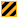

Planet interface
Version
This article is for the PC version of Stellaris only.
User interface
The planet interface serves as a key interface to the player as this is the place to construct buildings and districts, manage jobs, recruit armies, and generally improve the planets under the player's control. This interface can be accessed directly from the planet, from the outliner, through the expansion planner, and several other ways.
Due to interface similarities, the colonization tool is included in this article as well.
Planet summary
Unsurveyed planet summary
{kind=link}
Colonized planet summary
{kind=link}
District details
Construct buildings
Decisions
Colony designations
Planetary features
Terraforming
{kind=link}
{kind=link}
{kind=link}
{kind=link}
{kind=link}
{kind=link}
Resettlement
{kind=link}
The planet summary screen provides an overview of the planet's important statistics. The extent and type of the information displayed depends greatly on which tab is open and the amount of intel the player has for the planet, including whether it is surveyed or colonized.
- All instances
- Planet icon - Shows the planet type as well its
 habitability level (if surveyed) (the value shown is the maximum among all empire species).
habitability level (if surveyed) (the value shown is the maximum among all empire species).  Planet size - Determines the base amount of
Planet size - Determines the base amount of  districts on the planet.
districts on the planet.- Planet surface - Displays an image of the planet's surface, based on the planet class. Planet modifiers are also shown here.
- Unsurveyed planets
All unsurveyed planets (within sensor range) provide very little information: The planet's type, size, and number of pops.
Modifiers, habitability, features, and other information is unavailable.
- Surveyed planets
All surveyed planets provide basic summary details. Some options may not be available depending on the planet type.
 Pops - The number of pops on the planet. Hovering over this value will show a breakdown of each species living on the planet.
Pops - The number of pops on the planet. Hovering over this value will show a breakdown of each species living on the planet. Decisions - Opens a list of decisions that can be enacted on this planet. Almost all decisions require the planet to be colonized, very few decisions can be enacted on an uncolonized planet.
Decisions - Opens a list of decisions that can be enacted on this planet. Almost all decisions require the planet to be colonized, very few decisions can be enacted on an uncolonized planet.- Colonize - Colonizes the planet, only for uncolonized planets in controlled systems. Clicking this brings up the colonization tool.
 Terraform - Opens a list of planet types to terraform into with cost and time depending on climate choice. Requires
Terraform - Opens a list of planet types to terraform into with cost and time depending on climate choice. Requires  Terrestrial Sculpting for normal planets,
Terrestrial Sculpting for normal planets,  Climate Restoration for
Climate Restoration for  tomb worlds - or barren worlds with the Terraforming Candidate modifier, and
tomb worlds - or barren worlds with the Terraforming Candidate modifier, and  Ecological Adaptation if the planet is colonized.
Ecological Adaptation if the planet is colonized. Features - Opens a list with the planetary features that are present on the planet. These typically determine the number of rural districts that can be built on the planet, but may give other modifiers.
Features - Opens a list with the planetary features that are present on the planet. These typically determine the number of rural districts that can be built on the planet, but may give other modifiers.  Blockers usually reduce the number of districts that can be built and may also "block" other features, preventing their use. Rare features have a golden outline and generally allow special
Blockers usually reduce the number of districts that can be built and may also "block" other features, preventing their use. Rare features have a golden outline and generally allow special  buildings. The number of
buildings. The number of  rare deposits and
rare deposits and 
blockers is shown below the planetary features button.- Districts - The types of districts that are available on the planet, as well as the maximum number that can be built. Above the district types is the remaining number of districts that can be built; red icons mean the capacity is reduced due to features (usually blockers).
- Planet type description - A flavor description of the planet type, along with its climate type.
- Colonized planets
Colonized planets have additional information, as well as additional tabs (see below).
 Governor - Displays the leader assigned to the planet's sector (if any). The planet will be affected by the leader's traits and level.
Governor - Displays the leader assigned to the planet's sector (if any). The planet will be affected by the leader's traits and level.- Districts - As above and: Below the types is the remaining number of districts that can be built for each type. Gray icons mean that there are too few remaining districts allowed on the planet. Red blocker icons mean that blockers are blocking a planetary feature that increases the cap for that district type.
- Buildings - The buildings that have been built on the planet, as well as available and locked building slots. The amount of building slots available depends on the number of city districts and other factors.
 Stability - (0-100) High stability increases production and low stability decreases it. Base stability is 50 and can be increased by high happiness and amenities, and decreased by a lack of housing, amenities, and low happiness. Various modifiers may also directly affect stability. Low stability may eventually lead to a full-blown revolt.
Stability - (0-100) High stability increases production and low stability decreases it. Base stability is 50 and can be increased by high happiness and amenities, and decreased by a lack of housing, amenities, and low happiness. Various modifiers may also directly affect stability. Low stability may eventually lead to a full-blown revolt.- Resettle - Replaces colonization button; if allowed by policies and species rights, the player can move pops from one colony to another.
 Crime - Crime is based on the number of pops living on the planet. Pops with high happiness generate less crime than pops with low happiness. Governors and some jobs reduce crime. High crime may lead to negative events on the planet, including reduced production and stability drops. In
Crime - Crime is based on the number of pops living on the planet. Pops with high happiness generate less crime than pops with low happiness. Governors and some jobs reduce crime. High crime may lead to negative events on the planet, including reduced production and stability drops. In  gestalt consciousness empires, this is replaced with Deviancy, which works in much the same way.
gestalt consciousness empires, this is replaced with Deviancy, which works in much the same way. Housing - Housing is increased by districts and buildings. Every pop uses 1 housing. This can be increased or reduced by traits and other modifiers. Having low housing reduces stability, increases emigration push, and can stop pop growth, or even decline the number of pops.
Housing - Housing is increased by districts and buildings. Every pop uses 1 housing. This can be increased or reduced by traits and other modifiers. Having low housing reduces stability, increases emigration push, and can stop pop growth, or even decline the number of pops. Amenities - Amenities are increased by certain jobs, as well as some buildings. Every pop uses 1 amenity. This can be increased or reduced by modifiers. Having high amenities increases happiness (or stability in gestalt consciousness empires), while low amenities decreases it.
Amenities - Amenities are increased by certain jobs, as well as some buildings. Every pop uses 1 amenity. This can be increased or reduced by modifiers. Having high amenities increases happiness (or stability in gestalt consciousness empires), while low amenities decreases it. Jobs - The amount of free jobs available on the planet. Hovering over this number shows a breakdown of all jobs by type.
Jobs - The amount of free jobs available on the planet. Hovering over this number shows a breakdown of all jobs by type. Unemployed Pops - The amount of unemployed pops, by strata. It's possible to have unemployed pops, even if there are free jobs available, if the available job is of a lower strata than the pop, or the pop cannot promote to a higher strata.
Unemployed Pops - The amount of unemployed pops, by strata. It's possible to have unemployed pops, even if there are free jobs available, if the available job is of a lower strata than the pop, or the pop cannot promote to a higher strata.- Sector - Allows you to create a sector, if the planet isn't already inside one, or open the sectors tab, if it is. Can move the sector capital here. If the planet is in the capital sector, this will also move your
 empire capital.
empire capital.  Designation - Allows you to change the designation of the planet. By default, this is set automatically. Designations increase efficiency of districts, buildings, and jobs related to that designation. Capital planet designation is always set automatically.
Designation - Allows you to change the designation of the planet. By default, this is set automatically. Designations increase efficiency of districts, buildings, and jobs related to that designation. Capital planet designation is always set automatically.- Planetary Ascension - Upgrades the effect of designations and reduces the amount of empire size from the colony.
- Automate colony - Toggles the game AI to manage this colony, primarily district and building construction.
- Build Queue - Lists any ongoing district and building construction, blocker clearing, and decision enactment. Items can be moved up and down, or cancelled. The progress will only increase for the item at the top but is not lost if another item is prioritized.
 Trade Value - The amount of trade value generated by pops and jobs on the planet. This is automatically converted into other resources.
Trade Value - The amount of trade value generated by pops and jobs on the planet. This is automatically converted into other resources.- Planet Production and Deficit - Lists any resource surpluses and deficits on this planet. Production is any positive resource generation on the planet and deficit is any negative resource generation.
Population
Planet surface
Pop details
{kind=link}
{kind=link}
The population tab serves as a place to manage the currently available jobs, as well as view the current pop demographics.
- Jobs - A list of jobs divided by type and


 strata. The total number of pops in each strata is shown on the left; to the right of that is the number of unemployed pops in that strata, and then the jobs in that strata. At the top of each strata is a summary of resource upkeep and production by type. Clicking on a strata shows more detailed list of those jobs. In the detailed list, each job will list the total upkeep and production of each resource, as well as the number of free jobs and pops employed. While in strata detail, clicking the [-] button decreases the amount of available jobs of that type, and clicking the [+] button increases it. While not in strata detail, clicking on a job prioritizes it, which massively increases its weight and will almost always result in the job getting filled (if there's enough pops). Clicking on the job again removes its prioritization and resets the weight. Only 1 job can be prioritized at a time.
strata. The total number of pops in each strata is shown on the left; to the right of that is the number of unemployed pops in that strata, and then the jobs in that strata. At the top of each strata is a summary of resource upkeep and production by type. Clicking on a strata shows more detailed list of those jobs. In the detailed list, each job will list the total upkeep and production of each resource, as well as the number of free jobs and pops employed. While in strata detail, clicking the [-] button decreases the amount of available jobs of that type, and clicking the [+] button increases it. While not in strata detail, clicking on a job prioritizes it, which massively increases its weight and will almost always result in the job getting filled (if there's enough pops). Clicking on the job again removes its prioritization and resets the weight. Only 1 job can be prioritized at a time. - Demographics - This shows the average pop approval (
 happiness times
happiness times  political power) on the planet. Hovering over this value will show approval by strata. Below that are the pops that are currently
political power) on the planet. Hovering over this value will show approval by strata. Below that are the pops that are currently  [1] growing, being
[1] growing, being  [2] assembled, and
[2] assembled, and  declining. Below that is a pie chart of species distribution, then a summary of pop ethos present in the colony.
declining. Below that is a pie chart of species distribution, then a summary of pop ethos present in the colony.
- Pop Details
Selecting a pop on the planet will open the pop details screen next to the planet interface containing the following information:
- Its species (Name, Portrait, Habitability, Traits)
- Its ethos
- Its rights (Citizenship, Living Standards, Military Service, Population Controls, Colonization Rights, Migration Controls)
- Its job and stratum
- Its faction (if any)
- Its happiness and political power
- The crime it generates
- The empire size it generates
- The housing and amenities it uses
- The resources it produces and consumes
As is usual, hovering over most of these provides more information, such as modifiers affecting resource production
Armies
Armies
{kind=link}
The armies tab is used to manage all ground forces on the planet. Note: Enemy planets must (generally) be occupied by armies in order to obtain them in war.
- Garrison - The army power of all the armies stationed on the planet.
- Assault - The army power of all the assault armies stationed on the planet.
- Recruit - Opens a list of armies available for recruitment. Recruiting an army adds it to the build queue.
- Embark All - Embarks all non-defense armies on transport ships, for use in invading or defending other planets. Transport ships are quite fragile and will tend to go in circles while in combat.
- Armies - A list of the armies present on the planet, along with their name, army power, and health. Clicking on the button on an army gives additional information about the army.
 Devastation - Devastation is generally increased by bombardment, but can also be increased by events. It gives various debuffs, including job production. Below 25% devastation, armies take half damage from bombardment and pops cannot die. Above 50%, inhibitors no longer work. Above 75%, armies take twice the damage from bombardment. Devastation also appears as a planet modifier, and so is visible on other tabs.
Devastation - Devastation is generally increased by bombardment, but can also be increased by events. It gives various debuffs, including job production. Below 25% devastation, armies take half damage from bombardment and pops cannot die. Above 50%, inhibitors no longer work. Above 75%, armies take twice the damage from bombardment. Devastation also appears as a planet modifier, and so is visible on other tabs. Commander - Assign a commander to lead the armies on this planet.
Commander - Assign a commander to lead the armies on this planet.- Build queue - Shows the armies being recruited on this planet.
Holdings
Holdings
Corporate buildings
{kind=link}
{kind=link}
The Holdings tab is used by  corporate empires for establishing and managing branch offices and by
corporate empires for establishing and managing branch offices and by  overlords to build subject holdings.
overlords to build subject holdings.
- Common
- Planet Production and Deficit - Same as planet summary, except only resources produced and used by holding buildings, one section each for colony owner and holding owner.
- Holdings - The holding buildings that have been constructed on the planet, as well as free and locked slots. Corporate slots are unlocked by upgrading the colony capital building. Overlord slots are unlocked by subject agreements
- Corporate
- Open Branch Office - Opens a branch office on the planet at a base cost of
 1000 energy and
1000 energy and  100 influence, increasing with planet distance from the capital. Allows for constructing corporate buildings and collecting the trade value as energy from this planet.
100 influence, increasing with planet distance from the capital. Allows for constructing corporate buildings and collecting the trade value as energy from this planet. - Energy - The amount of energy collected, based on planet trade value, also calculated into production and deficit. For criminal syndicates, this value is increased by high crime and decreased by low crime.
- Overlord
 Loyalty - Effect of the holding on subject's monthly loyalty.
Loyalty - Effect of the holding on subject's monthly loyalty.
Colonization tool
{kind=link}
While it is possible to manually perform all the necessary steps needed to colonize a planet, the colonization tool smooths the experience by automating the process, leaving the player to make only the important decisions.
- The left side of the window is a list of all the species that can colonize the planet, along with their planet preference and traits.
- The top right of the species description shows the
 resource cost of the colony ship and the species' habitability level for the planet in question.
resource cost of the colony ship and the species' habitability level for the planet in question. - Above the species lists is a checkbox to filter to just the empire's founder species.
- The right side of the window displays information about the planet.
- The top right of the window shows the planet class, size, and highest habitability (of all species in your empire), and an image of the planet surface and any modifiers.
- Below the planet info, on the left are the districts that can be built on the planet.
- To the right of the districts is a list of all the planetary features present on the planet.
- To colonize, click on the desired species. A colony ship will be queued at the closest starbase.